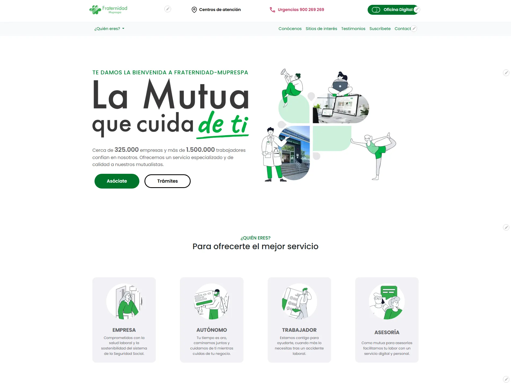
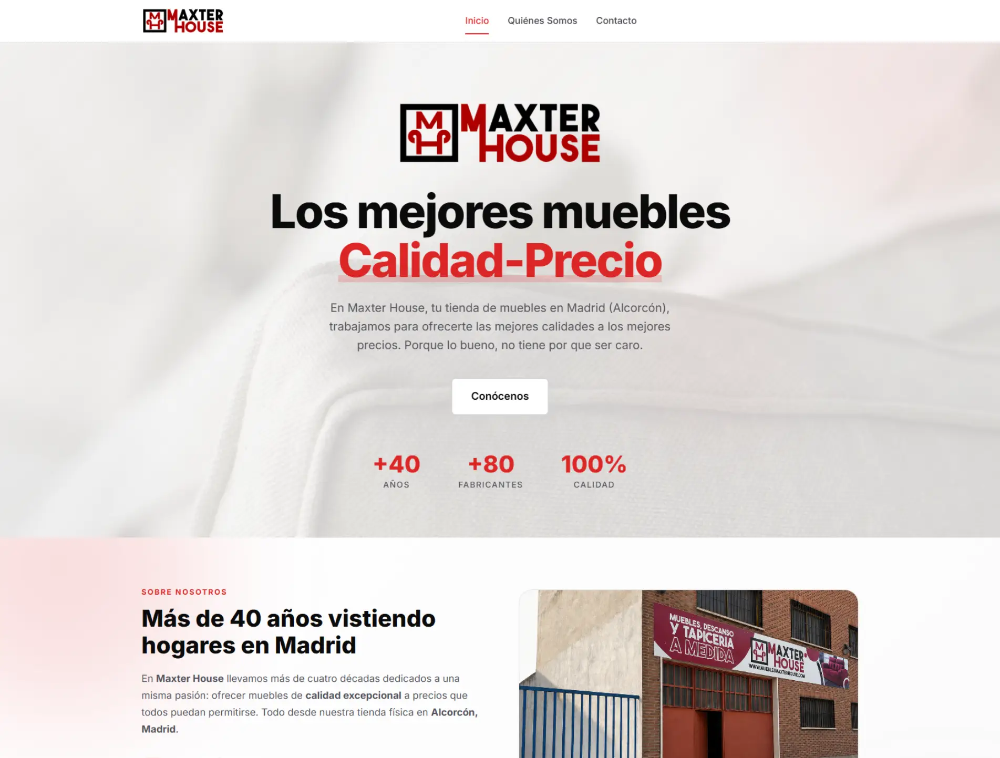
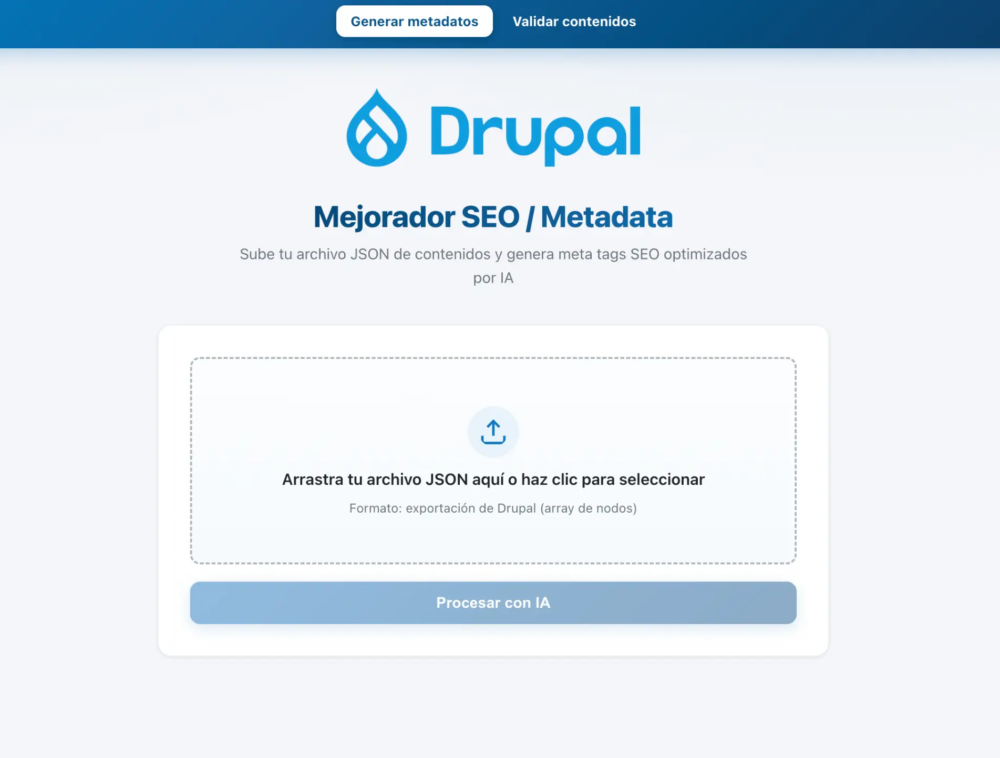
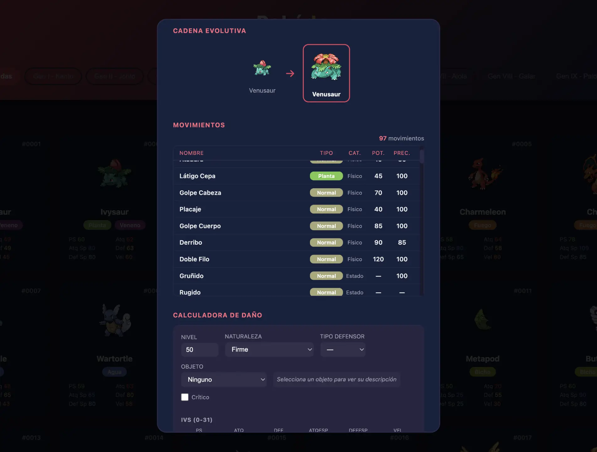

$ quiensoy
Full-Stack Developer | SysAdmin | UX/UI | Accessibility
~/sobre_mí
> Desarrollador web con experiencia en el diseño, desarrollo y mantenimiento de soluciones web enterprise sobre Drupal, creando módulos personalizados y cuidando aspectos críticos como accesibilidad, rendimiento y calidad de código. Dominio de HTML, CSS/SCSS, JavaScript, PHP y frameworks como React y Astro. Integración de inteligencia artificial como herramienta de optimización en procesos de desarrollo y diseño.
~/experiencia
Programador Full-Stack (Drupal) @ Auren (Servicio cliente Fraternidad)
Desarrollo y mantenimiento de soluciones sobre Drupal 9/10/11, participando activamente en la evolución de portales corporativos. Diseño e implementación de módulos personalizados en PHP, desarrollo de lógica de negocio a medida, extensión de funcionalidades mediante hooks y preprocess, y personalización avanzada de la capa de presentación con Twig.
> Ver más sobre esta experienciaProgramador Full-Stack (Angular / JSP) @ Vodafone
Participación en entornos corporativos de desarrollo web, trabajando con Oracle WebCenter Sites para la gestión y mantenimiento de contenido digital en plataformas enterprise. Desarrollo de componentes dinámicos con JSP y construcción de interfaces con Angular 12.
> Ver más sobre esta experienciaAdministrador de Sistemas / Web & IT Manager @ Autónomo
Impulso de la digitalización empresarial mediante el desarrollo de soluciones web en WordPress, integración de APIs, administración de infraestructura IT y gestión de entornos de servidor completo.
> Ver más sobre esta experiencia~/proyectos

Portal Corporativo Fraternidad-Muprespa
Desarrollo y evolución del portal corporativo de Fraternidad-Muprespa en Drupal, realizado junto al equipo de proyecto, con creación de componentes, módulos personalizados y mejoras de accesibilidad, rendimiento y experiencia de usuario.

Muebles Maxter House
Web corporativa y catálogo de mobiliario desarrollada con Astro y React, con backend propio para la administración y gestión dinámica de contenidos.
Eventos Octavio
Web corporativa para una empresa especializada en producción y animación de eventos, DJ, iluminación y servicios audiovisuales.

Mejorador de Metadata y SEO para Drupal
Herramienta web para generar y validar metadatos SEO de contenidos Drupal de forma masiva usando IA local y gratuita, sin servicios de pago ni envío de datos a la nube.

Pokédex — Calculadora de Daño
Aplicación web para consultar las 1025 especies Pokémon y calcular el daño exacto de cada ataque con las fórmulas oficiales del juego.
~/formación_y_cursos
Curso Google Analytics 4 (GA4)
Formación en el modelo de medición de Google Analytics 4, incluyendo implementación de eventos, conversiones y estructura de datos orientada a análisis de comportamiento de usuario y toma de decisiones basada en datos.
Curso Avanzado Microsoft SQL
Profundización en uso avanzado de Microsoft SQL, trabajando con consultas complejas, optimización de rendimiento y buenas prácticas de configuración y monitorización en entornos de datos empresariales.
GRADO SUPERIOR (DAM) - Desarrollo de Aplicaciones Multiplataforma
Formación técnica en desarrollo de software y aplicaciones multiplataforma, abarcando programación orientada a objetos, estructuras de datos, tecnologías web y fundamentos de ingeniería de software.
Cisco CCNA
Formación en fundamentos de redes y arquitectura de comunicaciones, incluyendo modelos de red, direccionamiento IP, switching, routing, segmentación de tráfico y diagnóstico de conectividad.
GRADO SUPERIOR (ASIR) - Administración de Sistemas Informáticos en Red
Formación en administración de sistemas e infraestructura IT, incluyendo gestión de entornos Windows/Linux, servicios de red, servidores, Active Directory, seguridad y continuidad de sistemas.